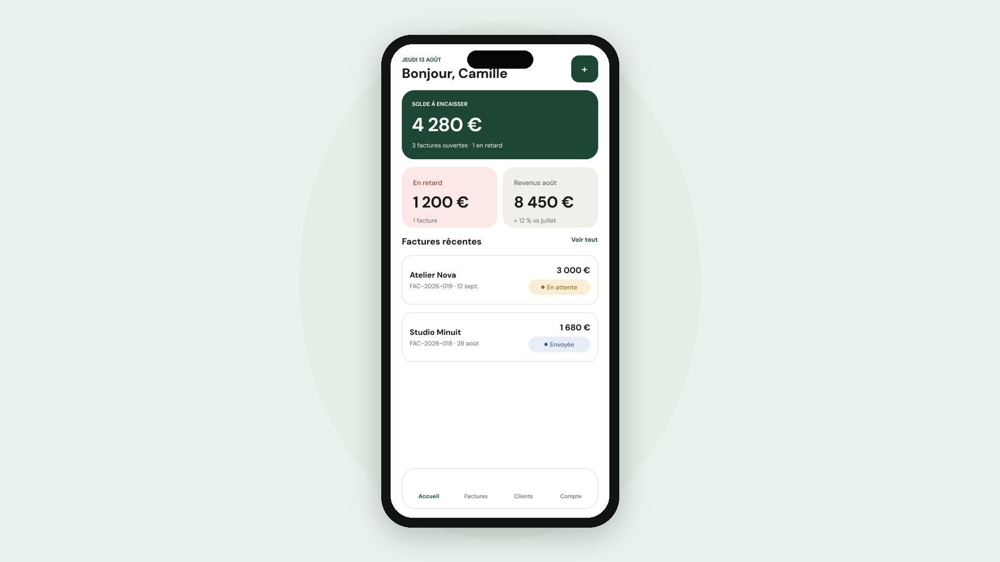
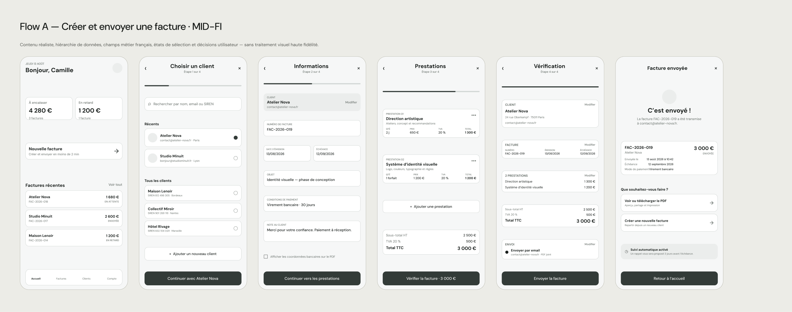
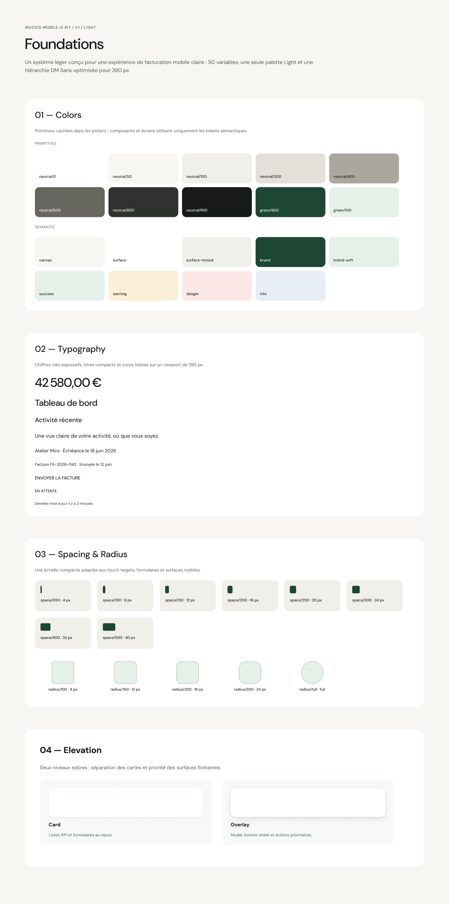
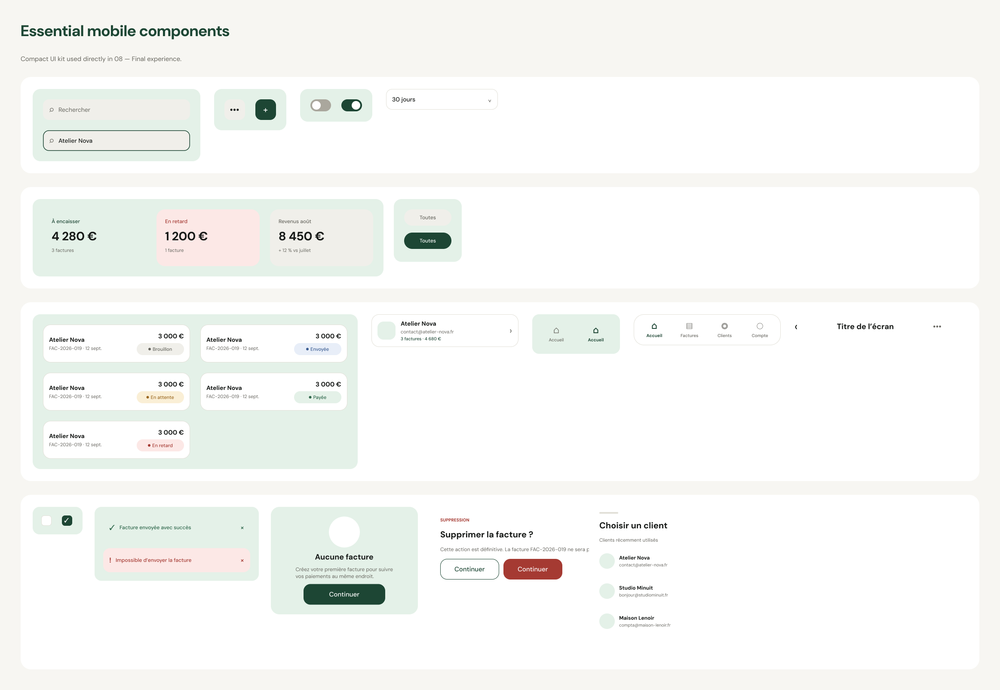
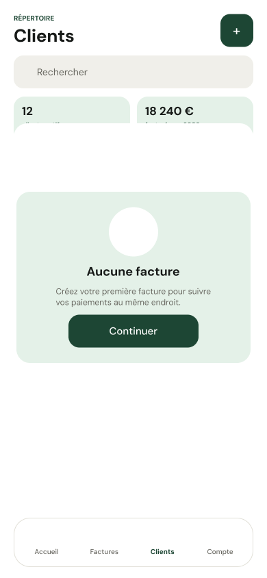
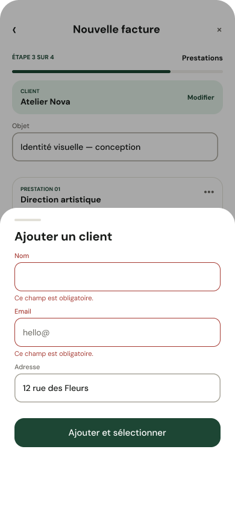
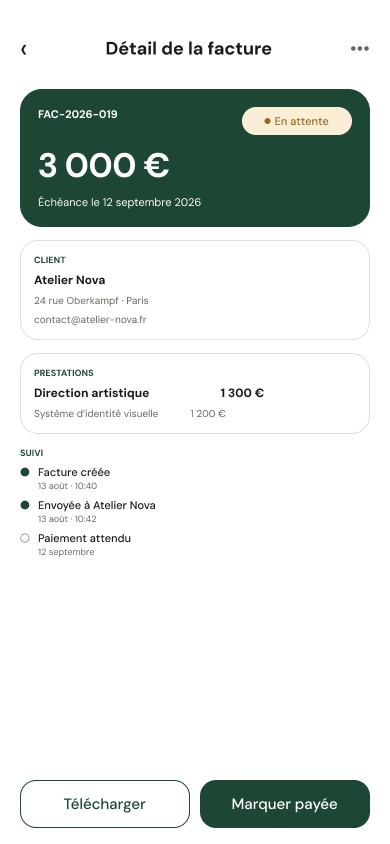
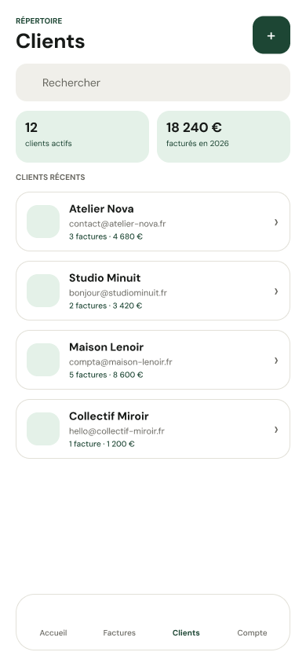
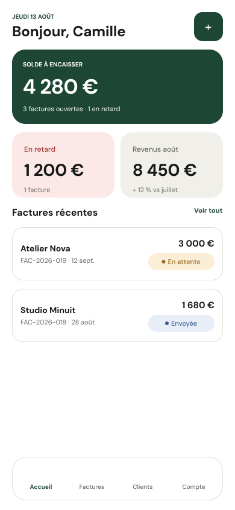

Prioritise, rather than compress.
DecisionI surfaced totals, status and the next useful action, instead of shrinking a desktop dashboard into 390 pixels. The result is a calmer first scan.
Mobile product · Independent concept · 2026
Facture brings invoicing into one clear mobile journey, so independent workers can create, send and follow up without losing their place.

The earlier tool could store invoices, but its fragmented routes made small actions feel like separate jobs. On mobile, every context switch adds effort.
My framingI treated speed as continuity rather than fewer features: keep the user’s current object, choices and next action visible from start to finish.
DecisionI surfaced totals, status and the next useful action, instead of shrinking a desktop dashboard into 390 pixels. The result is a calmer first scan.
DecisionA missing client can be created inside the invoice flow and returns already selected. The detour solves the problem without becoming a second journey.
DecisionSelected, loading, empty, validation and success states explain what changed and what happens next, reducing dependence on instructional copy.
I deliberately limited the primary navigation to four spaces. Every daily action belongs to one of them, so the bottom bar stays predictable while creation remains contextual.
Create and send an invoice
A separate Create destination would turn a verb into a place.
ChosenStable object-based navigation with creation kept in context.
I split the flow around user decisions—not database fields. Client, invoice information, line items and review each have a clear moment, while progress and preserved data maintain orientation.
Context continuityThe new client returns selected inside the invoice.
Progressive disclosureOnly the current decision is foregrounded.
ResultThe user can complete the core journey without restarting, backtracking or guessing whether data was saved.
The mid-fidelity pass included realistic totals, statuses and actions because empty boxes could not reveal hierarchy problems. It let me check whether each screen answered three questions: where am I, what matters now and what can I do next?

I kept one deep-green accent for orientation and action. Colour never carries meaning alone: label, icon and hierarchy reinforce every invoice state.
Direct and compact at mobile sizes.
One deep green for action and orientation.
Soft containers; pill controls only where state changes.
Default, pressed, loading, success, error and empty.


I gave the dashboard the strongest overview, invoice creation the clearest sequence and confirmation moments the highest contrast. The screens are not equally important, so the presentation is not equal either.
Orient, create and act. Each screen earns its place in the journey.


Status, totals and feedback stay crisp at every screen size.
Invoice sent successfullyPDF created and shared with Atelier Nova
Open invoice detailContinue with the next useful action




A clear sequence can feel faster than one overloaded form when progress, data and next actions remain visible.
For frequent users, I would explore reusable line items, duplication and draft templates without weakening the first-use model.
I would test terminology, interruption recovery, tax cases and the speed of repeat invoicing before extending the feature set.
Mobile UI craft · Interaction design · Product judgement